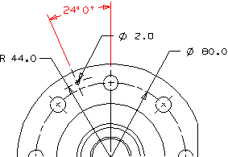
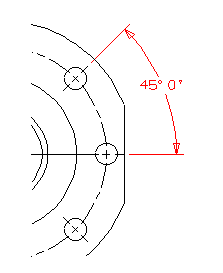
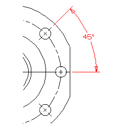
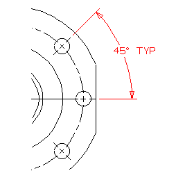

Dimension the minor angle between the center marks through the top bolt hole and the 2 mm hole.

Dimension the minor angle between these two bolt holes on the right side of the part.

Change the display of this angular dimension to show only degrees (no minutes or seconds).

Add the word TYP to this angular dimension.
